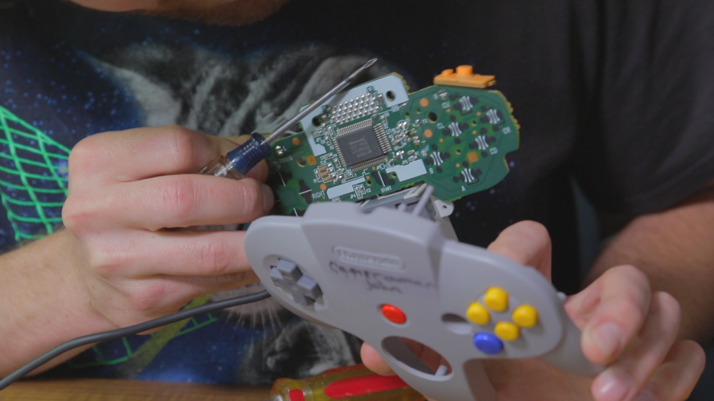
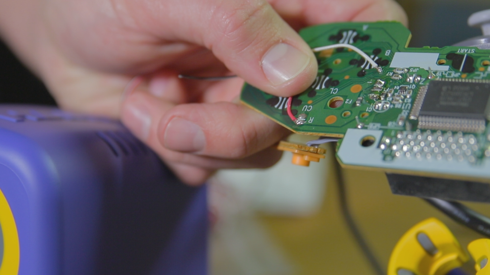
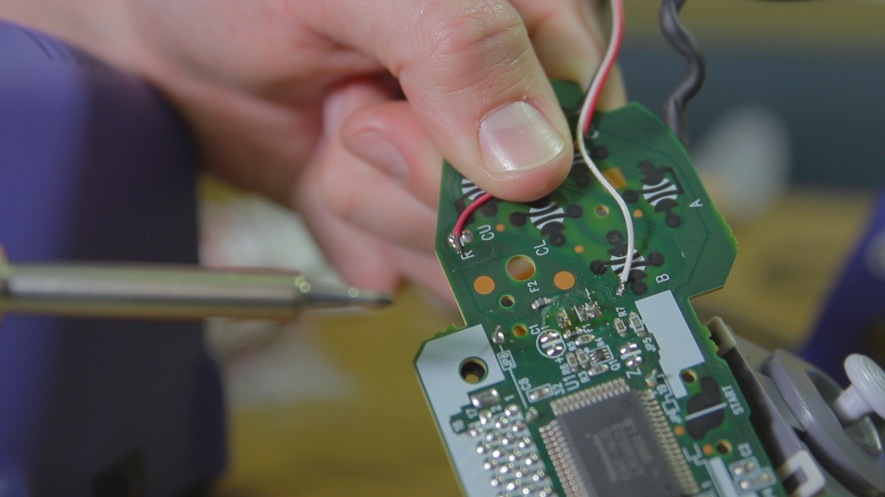
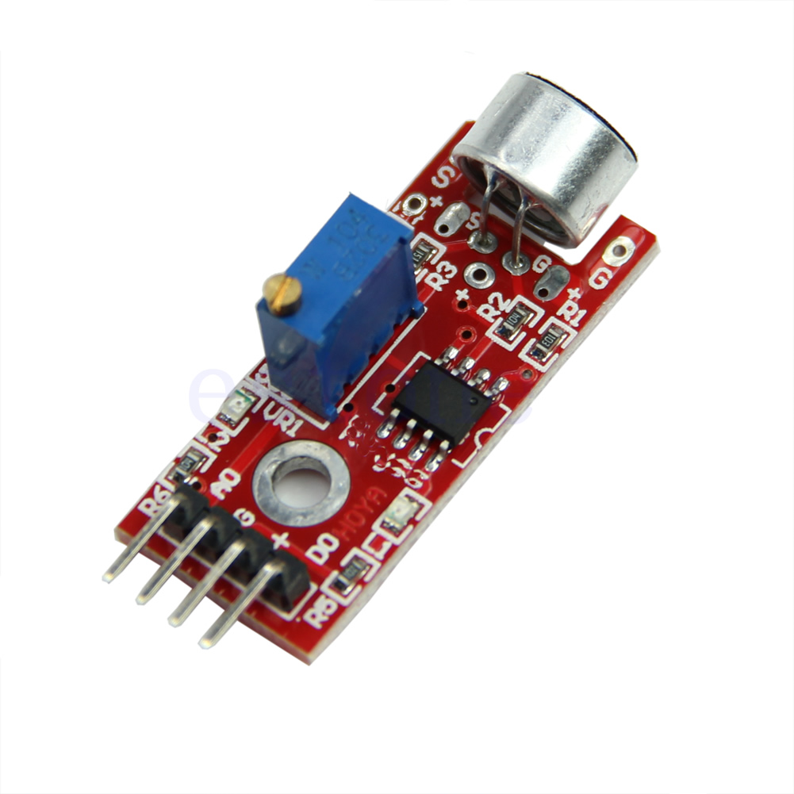

What?
I used a relay and microphone to hijack the Nintendo controller's 'B' button. If a player wants to press 'B' they need to make noise loud enough to trigger the relay.NO ARDUINO OR PROGRAMMING REQUIRED just super janky electronics.
Why?
Arin Hanson of GameGrumps invited us to visit their office, and it's not proper to show up empty handed.As for where 'scream sensor' came from, I've got this box of 'Arduino sensor modules' and we dug through it imagining how you'd play old N64 games with inputs other than buttons.
Video
Filming by cameramanjohn
Instructions
There are much better ways to do this, but here are modules similar to what I used:- Relay Module
- Microphone Module
- Resistor somewhere around 100-220 ohms (I tried to mimic the button circuit)
Pull the controller PCB out.
|  |
| N64 controller PCB |
{kind=link}
|  |
| Solder points |
{kind=link}
|  |
| Solder points, better angle |
{kind=link}
I'm not sure how important the resistor is, but I measured the resistance between the two hack wires when pressing the 'B' button down and it was somewhere between 100-200ohms. The relay is basically a short, so I added a 220ohm resistor in line just to be safe. It doesn't matter which wire you put the resistor on.
Then connect the two hack wires to the 'normally-open' screw terminals of the relay module. When the microphone signal peaks, the relay turns on and the N64 thinks the 'B' button was pressed.
All that's left to do is adjust the potentiometer on the microphone module.
|  |
| Microphone module |
{kind=link}
Conclusion
This project was pretty easy, but is relatively invasive for the N64 controller. There's some Arduino code online that lets you read the controller commands so you could probably intercept the commands, modify them, and send them to the console without ever disassembling the controller.A relay is totally overkill for this project, but they're cheap and more importantly all I had at the time. An optoisolator might be a better choice..
That's definitely a very interesting concept. Do you believe there would be any good way to physically modify it and somehow shrink down the space it takes up without leaving a mess of cables?
ReplyDeleteSAUCY
ReplyDeleteokay this is cool an all, but CAN YOU GIVE BUILD INSTRUCTIONS TO THE AUTOMATIC CHOPSTICKS!
ReplyDeletegamer
ReplyDelete